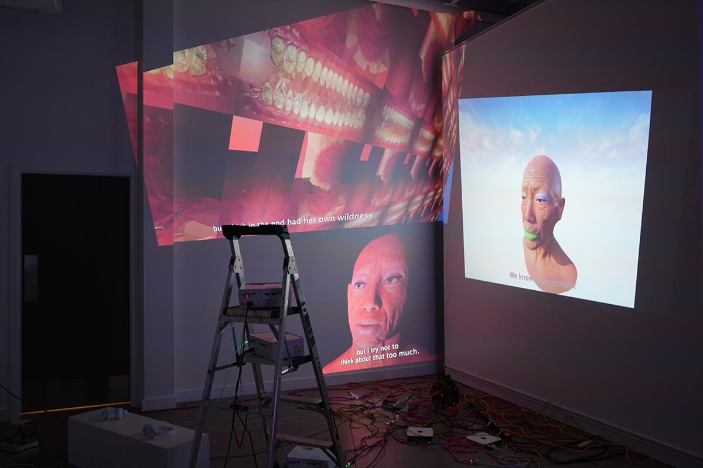
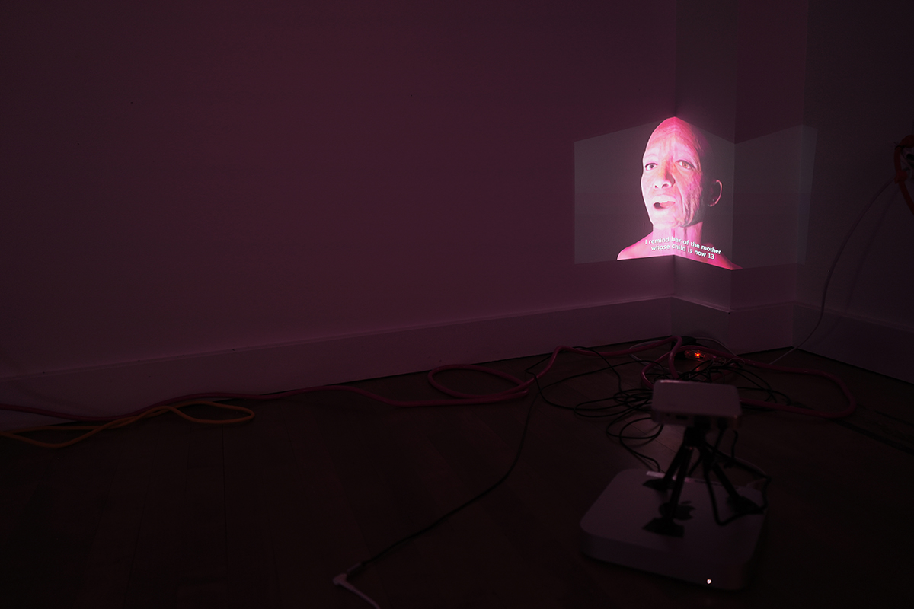

In this project, I conducted a series of workshops in which participants envisioned a funeral for an AI chatbot, encouraging them to imagine the embodied experience of an AI. I argue that our language and rhetoric constrain how we conceptualize AI, often confining it to a human-centered framework. This humanization of AI risks enclosing it within a “black box,” prioritizing likeness to humans while obscuring alternative forms of intelligence.
The animation component of this project integrates fragments of participants’ responses into an inventive script, voiced by a series of AI beings, suggesting that AI could form unique kinships that expand beyond humanist thought. These narratives are paired with my technical descriptions of AI, reimagined through rhizomatic and Deleuzian assemblage concepts. The project also questions how game engines like Unreal Engine reinforce humanistic and colonial biases in AI design.

